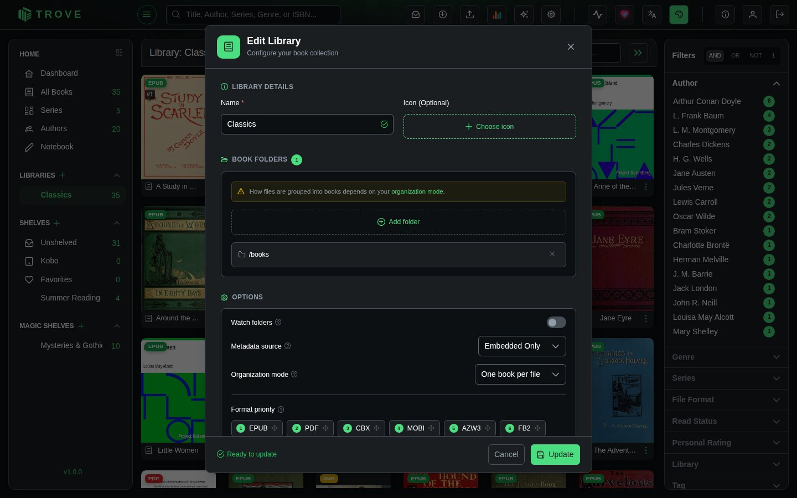
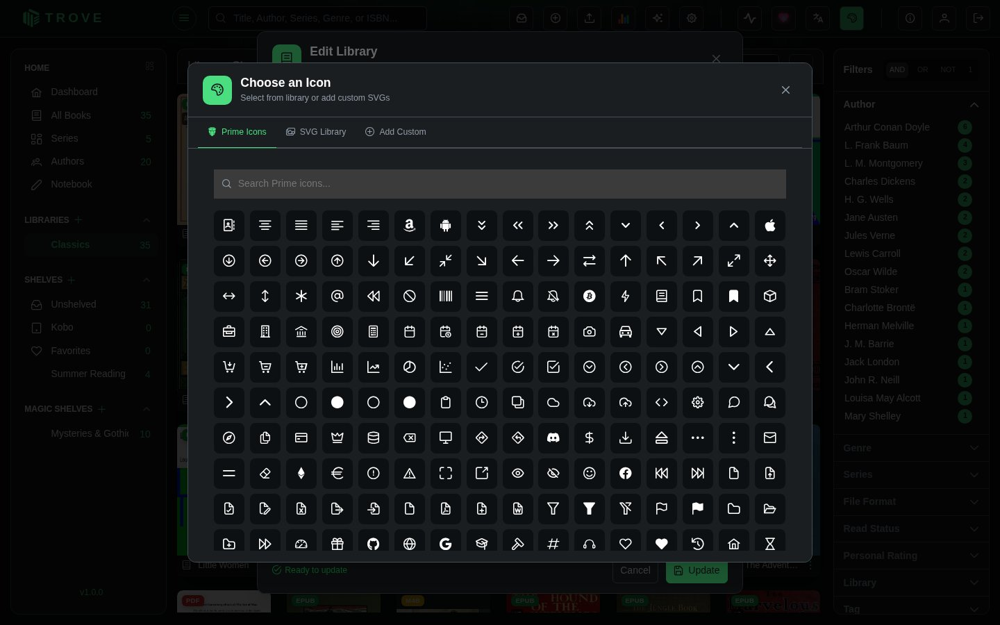
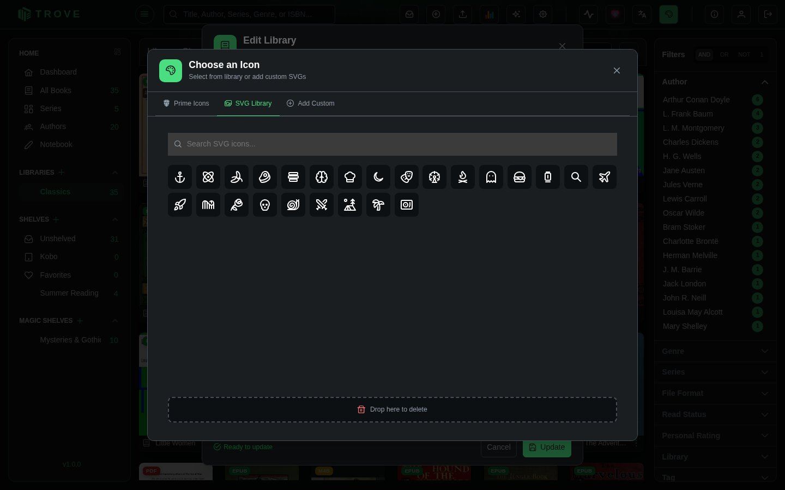
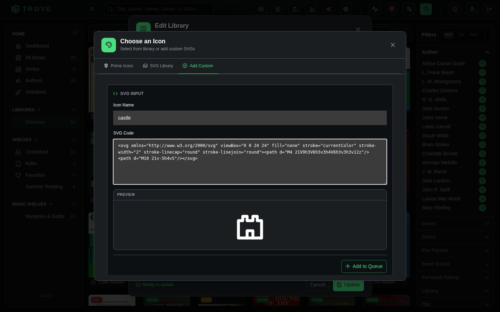

Custom SVG Icons
Personalize your Trove library with custom SVG icons for collections, tags, and more. Add your own icon designs or delete unwanted ones with an intuitive drag-and-drop interface.
What You'll Achieve
With Custom SVG Icons, you can:
- Add unique icons by pasting SVG code directly
- Preview icons instantly before saving
- Browse your collection with search and pagination
- Delete icons easily using drag-and-drop to trash
- Use icons anywhere in collections, tags, and library organization
How Custom Icons Work
The Icon Management Flow
-
🎨 Create or Find SVG
Design your own SVG or copy from icon libraries online. -
📋 Paste & Preview
Paste the SVG code into Trove and see an instant preview. -
💾 Save with Name
Give your icon a memorable name and save it to your collection. -
🔍 Browse & Search
Find your icons quickly with search and pagination. -
🗑️ Delete When Needed
Drag unwanted icons to the trash bin for easy removal.
Getting Started
Opening the Icon Picker
The icon picker appears when assigning icons to a Library, Shelf, or Magic Shelf.

-
Navigate to Library/Shelf/Magic Shelf Settings
-
Click the Choose Icon Button
-
Choose Your Tab: Select from Prime Icons, SVG Icons, or Add SVG Icon
Understanding the Icon Picker Interface
Interface Overview
The Icon Picker has three main tabs for different icon sources:
Tab 1: Prime Icons (Built-in)
Browse the default PrimeNG icon library:

Features:
- 🔍 Search Bar: Quickly filter icons by name
- 🎯 Icon Grid: Visual grid of all available icons
- ✅ Selection: Click any icon to select and apply it
Tab 2: SVG Icons (Your Collection)
Browse and manage your custom SVG icons:

1. Search Your Icons
Use the search bar to filter icons by name:
Search: "book" → Shows: book-open, book-closed, bookmark2. Icon Grid Display
Each icon displays as a clickable tile with:
- Visual preview of the SVG
- Icon name on hover
3. Trash Bin (Delete Icons)
Located in the bottom-right corner for easy access.
How to Delete:
-
Drag the Icon
Click and hold on any SVG icon -
Drag to Trash
Move your cursor to the trash bin area -
Drop to Delete
Release to permanently delete the icon -
Visual Feedback
The trash bin highlights when you hover over it
Tab 3: Add SVG Icon (Create New)
Add new custom icons by pasting SVG code:

Step-by-Step Guide
1. Name Your Icon
Enter a descriptive name in the input field:
Icon Name: "rocket-ship"Naming Rules:
- Only letters, numbers, and underscores
- Maximum 255 characters
- No spaces or special characters
2. Paste SVG Code
Copy SVG code from your source and paste into the textarea:
<svg xmlns="http://www.w3.org/2000/svg" width="24" height="24" viewBox="0 0 24 24" fill="none" stroke="white" stroke-width="2" stroke-linecap="round" stroke-linejoin="round" class="lucide lucide-chess-king-icon lucide-chess-king">
<path d="M4 20a2 2 0 0 1 2-2h12a2 2 0 0 1 2 2v1a1 1 0 0 1-1 1H5a1 1 0 0 1-1-1z"/>
<path d="m6.7 18-1-1C4.35 15.682 3 14.09 3 12a5 5 0 0 1 4.95-5c1.584 0 2.7.455 4.05 1.818C13.35 7.455 14.466 7 16.05 7A5 5 0 0 1 21 12c0 2.082-1.359 3.673-2.7 5l-1 1"/>
<path d="M10 4h4"/>
<path d="M12 2v6.818"/>
svg>Valid SVG Sources:
- Icon libraries (Lucide, Iconoir, Heroicons, etc.)
- Custom designs from Figma, Sketch, or Illustrator
3. Preview Your Icon
As you paste, the preview updates automatically.
The preview shows exactly how your icon will appear in Trove.
4. Save the Icon
Click the "Save SVG" button to finalize:
What Happens Next:
- ✅ Icon is saved to ~/trove/data/icons/svg/
- 🔄 You're automatically switched to the SVG Icons tab
- 🎯 Your new icon is pre-selected and ready to use
Best Practices
Finding Quality SVG Icons
Recommended Icon Libraries
Naming Conventions
Use consistent naming for easier management:
Good Names ✅
book-open
folder-filled
tag-outline
star-filled-blueBad Names ❌
Icon1
MyIcon
NEW ICON!!!
icon_with_spacesBest Practices:
- Use lowercase letters
- Separate words with hyphens
- Be descriptive but concise
- Avoid version numbers (use meaningful names instead)
Troubleshooting
Common Issues and Solutions
Issue: "Invalid SVG content"
Causes:
- Missing
tag - Incomplete or corrupted SVG code
- Non-XML characters
Solutions:
- Copy the entire SVG code (from
to) - Validate SVG using SVG Validator
- Try downloading the SVG file and copying from there
Issue: Icon doesn't appear after saving
Causes:
- Browser cache
- Network error during save
Solutions:
- Refresh the page (F5)
- Clear browser cache
- Try saving again
- Check browser console for errors
Issue: Icon appears too large/small
Causes:
- Missing
viewBoxattribute - Hardcoded
widthandheight
Solutions:
<svg viewBox="0 0 24 24">
svg>Issue: Icon colors don't match theme
Causes:
- Hardcoded
fillorstrokecolors in SVG
Solutions:
fill="#000000" → fill="none"
stroke="#ff0000" → stroke="white"